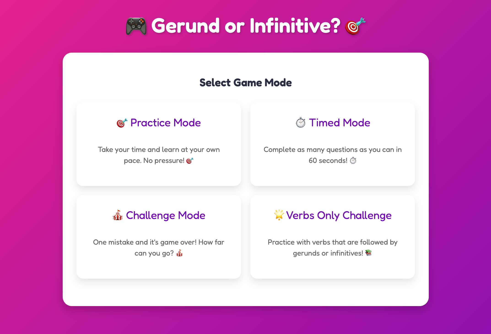
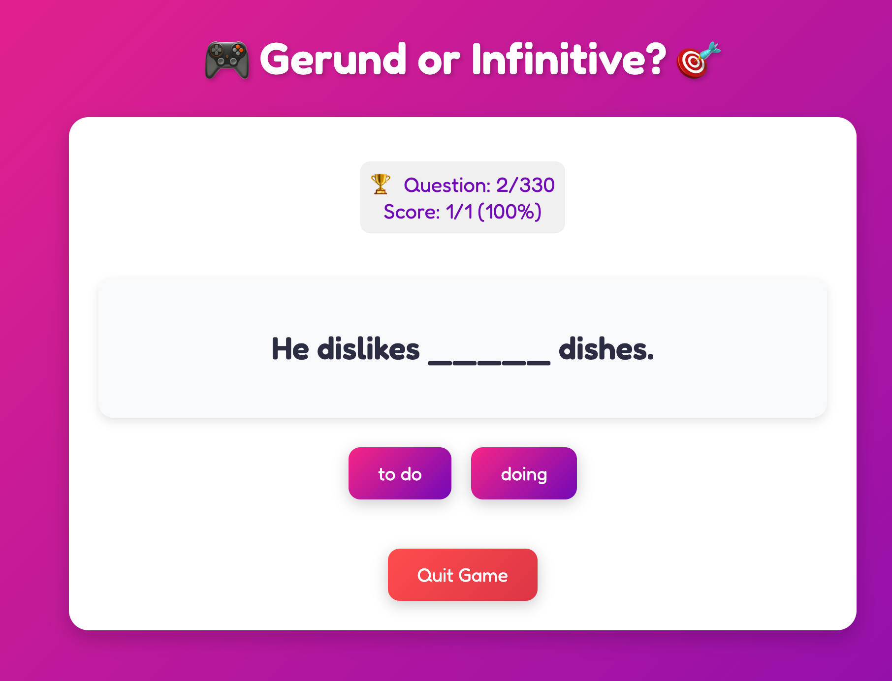
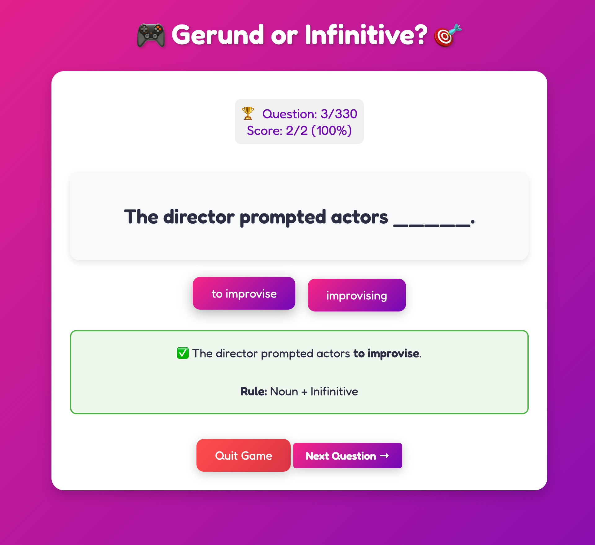

Gerund or Infinitive Game
Advanced grammar game teaching proper use of gerunds vs infinitives - one of the trickiest concepts for English learners
The Problem
Gerunds vs. infinitives is one of the most challenging grammar concepts for English learners. Students struggle to know when to use "to + verb" (infinitive) versus "verb + -ing" (gerund) after certain verbs, prepositions, and expressions. Traditional teaching methods rely heavily on memorization without clear patterns or engaging practice.
Specific Pain Points
- Complex rules: No single rule covers when to use gerunds vs infinitives - depends on the preceding verb or phrase
- Memorization overload: Students must memorize lists of verbs that take gerunds vs infinitives
- Double confusion: Some verbs can take both forms but with different meanings
- Low confidence: Students avoid using these structures due to fear of mistakes
- Lack of interactive practice: Traditional exercises don't provide enough varied practice with immediate feedback
The Solution
An interactive grammar game that teaches gerunds vs infinitives through contextual practice with clear explanations. Students work through sentences choosing between gerund and infinitive forms, receive immediate feedback, and see explanations for why each form is correct or incorrect. Includes examples and rules to guide learning.
Key Features
📚 Clear Examples
Comprehensive examples showing correct usage patterns for both gerunds and infinitives
💡 Explanations
Detailed explanations help students understand why one form is correct over another
🎯 Pattern Recognition
Organized practice by verb categories to help students recognize patterns
✅ Immediate Feedback
Instant validation with explanations so students learn from mistakes immediately
🔄 Varied Practice
Multiple question types covering different contexts and verb combinations
📖 Rule Reference
Accessible grammar rules and patterns students can reference during practice
Screenshots & Walkthrough

Main game interface for practicing gerunds vs infinitives

Interactive feedback showing correct grammar usage

Examples and explanations helping students understand the rules
Technical Implementation
Architecture Decisions
Built as a React-based interactive game focused on grammar validation and educational feedback. The system includes a comprehensive database of verbs categorized by whether they take gerunds, infinitives, or both. Each question is validated against this database with context-aware checking.
Core Features
- Verb categorization database (gerund-only, infinitive-only, both)
- Context-aware grammar validation
- Explanation system with rules and examples
- Progress tracking for different verb categories
- Mobile-responsive design for practice anywhere
Interesting Challenges
Challenge: Verbs That Take Both Forms
Some verbs like "remember," "forget," and "stop" can take both gerunds and infinitives but with different meanings. "I remember meeting her" (past event) vs "Remember to call her" (future action).
Solution: Built context-aware validation that checks not just the verb but the sentence meaning. The explanation system clarifies these subtle but important differences to help students understand.
Challenge: Providing Educational Explanations
Simply marking answers correct/incorrect isn't helpful - students need to understand why.
Solution: Developed an explanation system that provides rule-based feedback. Each answer includes why the gerund or infinitive is appropriate, often referencing common patterns or verb categories.
Results & Impact
Improved student confidence with gerunds and infinitives through interactive practice and clear explanations. Better understanding of when to use each form through pattern recognition and rule-based learning. Reduced errors in writing and speaking as students internalize the rules through practice. Accessible reference material helps students review independently.
Lessons Learned
Explanations Are Critical
Students need to understand the "why" behind grammar rules, not just know what's correct. Explanations transform the tool from a test into a learning experience.
Pattern Recognition Helps
Organizing practice by verb categories helps students recognize patterns rather than trying to memorize individual verbs. This approach is more sustainable for long-term learning.
Context Matters
Some verbs require context-aware checking because they can take both forms with different meanings. Simple right/wrong validation isn't enough - the system must understand context.